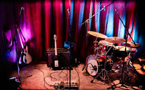

Berklee College of Music
Recognized for Outstanding Solo Guitar Performance in Boston.
Music & Arts
My music work is rooted in jazz guitar, Indian and global musical influence, original composition, live performance, and the creative discipline of improvisation.
Artist story
Born in Saudi Arabia and shaped by a rich mix of musical traditions, my playing carries the influence of Hindustani music, Arabic melody, jazz harmony, free improvisation, early American music, rock, soul, R&B, and bebop.
Indian music has always been one of the deepest threads in my ear: the patience of melodic development, the emotional pull of ornamentation, and the way rhythm can feel both disciplined and alive. That influence sits alongside my love of modern jazz guitar, original composition, and ensemble conversation.
Over the years, I have performed in jazz festivals and composition settings across North America, including recognition for Outstanding Solo Guitar Performance at Berklee College of Music in Boston and McGill University in Montréal.
I approach music as a living system: between musicians, audiences, traditions, places, and moments. Jazz has taught me how to listen deeply, respond honestly, and build structure without losing freedom.


Musical Achievements & Recognition
My musical path includes festival performances, original compositions, and recognition across North America.
Recognized for Outstanding Solo Guitar Performance in Boston.
Recognized for Outstanding Solo Guitar Performance in Montréal.
Performed and presented work across jazz festival and composition contexts, building a voice shaped by tradition, experimentation, and ensemble dialogue.
Recent release
In 2025, I released Suffice To Say with The BeSides, a locally formed Richmond jazz group. The album captures the collaborative spirit of the project: modern jazz, groove, improvisation, and original musical conversation.
Alongside The BeSides, I continue to perform in modern jazz trio settings and other projects with accomplished musicians whose paths cross through Richmond, Virginia’s creative scene.
Listen on BandcampExplore
Modern jazz trio performances, ensemble work, private events, festival settings, and creative collaborations.
Selected music, demos, videos, and listening links, including original work and collaborative releases.
Available for selected performances, private events, creative projects, recording work, and collaborations.
Booking inquiries →Booking
Reach out for bookings, recordings, creative projects, or performance inquiries.
Contact Me